SYSTEM LOGIN
WORKER ID: 7F3A-22C9-AX91
BEHAVIOUR INDEX: 0.92 / 1.00
COMPLIANCE TOKEN: VALID
MANDATORY COMPLIANCE

UNDER THE SETTING OF "DATA-DAOISM: 2077", THIS OPPRESSION IS MOSTLY PSYCHOLOGICAL AND ALGORITHMIC...
CORE MECHANISM: "WU WEI" (INACTION) AS A FORM OF RESISTANCE.
QUICKLY SCROLL TO COMPLETE THE KPI.